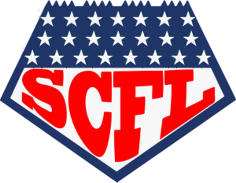

| Beaver Eaters | 138.94 | def. | BIG BLUE | 114.12 | +24.8 |
|---|---|---|---|---|---|
| The Powers of Pain | 135.8 | def. | Smoke Dragons | 100.64 | +35.2 |
| Master-Jeti | 118.02 | def. | Killer Klowns | 105.2 | +12.8 |
| THE MACHINES | 106.08 | def. | Lil’ Chops | 100.38 | +5.7 |
| Horsecollars | 119.6 | def. | Gumbas | 60.14 | +59.5 |
| StillTheCream | 96.9 | def. | Guido Haters | 78.06 | +18.8 |
| n.W.o | 85.26 | def. | Phins Phag | 76.34 | +8.9 |
| Pork Chop Express | 100.22 | def. | Wookie Leaks | 58.62 | +41.6 |
| W-L | PF | PA | Run | |
|---|---|---|---|---|
| Beaver Eaters | 4-0 | 471 | 358 | W4 |
| Pork Chop Express | 3-1 | 476 | 383 | W2 |
| BIG BLUE | 1-3 | 475 | 481 | L2 |
| Wookie Leaks | 1-3 | 300 | 376 | L1 |
| W-L | PF | PA | Run | |
|---|---|---|---|---|
| THE MACHINES | 4-0 | 468 | 343 | W4 |
| Master-Jeti | 3-1 | 425 | 361 | W2 |
| Lil’ Chops | 2-2 | 397 | 359 | L2 |
| Killer Klowns | 1-3 | 365 | 417 | L1 |
| W-L | PF | PA | Run | |
|---|---|---|---|---|
| The Powers of Pain | 2-2 | 463 | 417 | W1 |
| Smoke Dragons | 2-2 | 320 | 408 | L1 |
| Guido Haters | 1-3 | 354 | 391 | L2 |
| StillTheCream | 1-3 | 274 | 369 | W1 |
| W-L | PF | PA | Run | |
|---|---|---|---|---|
| Horsecollars | 4-0 | 456 | 332 | W4 |
| n.W.o | 2-2 | 340 | 364 | W1 |
| Gumbas | 1-3 | 294 | 415 | L2 |
| Phins Phag | 0-4 | 308 | 411 | L4 |
Beaver Eaters top the league at 4-0 with 471 points. Playoffs begin in week 15, which leaves 10 weeks of the regular season still to play.
Ten lead changes, two teams who could not shake each other off for four quarters, and in the end it came down to two running backs who were never on the field at the same time.
Through three quarters this was n.W.o’s. Patrick Mahomes threw two touchdowns, Will Reichard kicked from 47, 50, 41 and 29 — a placekicker, outscoring every skill player his manager owns, 19.0 of them — and they led 68-51 going into the fourth with the thing apparently settled.
Then Chuba Hubbard played the fourth quarter. Not his team: him. Two touchdowns, 24.9 points, every single one of them after the third quarter ended, and when he went in from two yards with nine minutes and twelve seconds left Phins Phag led 70.94 to 69.46 for the first time since the second. n.W.o had nothing left to put on the field. Everybody they owned had already played.
Except one. Alvin Kamara took the last five minutes and did the identical thing in reverse — three yards for a touchdown to take the lead back at 4:15, five yards for another with forty-five seconds to go, 17.8 points, all of them after Hubbard had finished. 85.26 to 76.34.
n.W.o are 2-2 and thoroughly average in a way four weeks has not resolved: 340 scored, 364 conceded, two wins, two defeats, nothing to tell you which they are. Phins Phag are 0-4 and last in the league, and the hard part is that they played well here. Hubbard was the best man on the field by six points. They still lost. That is what 0-4 feels like from the inside, and there are ten weeks of it left to get out of.
Here is a number for you: forty-nine to nothing, in the first quarter. Aaron Rodgers threw three touchdown passes inside six minutes. Quinshon Judkins ran one in. DK Metcalf caught a forty-three yarder. Lil’ Chops put up half a hundred points before The Machines had a man on the board, and I wrote a note to myself that said this one is finished.
I am an idiot. The Machines spent the next three quarters reeling it in a yard at a time — Derrick Henry late in the first, Lamar Jackson twice either side of the interval, Puka Nacua just after — and it came down to Jared Goff throwing eight yards with seven minutes and forty-two seconds left in the fourth. That was the first time all afternoon The Machines led. It was also the only lead change in the game. 106.08 to 100.38.
What makes it worth writing down is that it is now a habit. The Machines are 4-0 and have not won a comfortable game yet: 113-100 over the Powers of Pain, now this. Four weeks, 468 points, second in the league, and every single one of them a fight they could have lost. Either that is a team that knows how to finish or it is a coin that has come up heads four times. December will tell us which.
Lil’ Chops fall to 2-2 and will not want to hear it, but Rodgers also threw two interceptions in that same opening quarter, and twenty-two points from a quarterback who hands four of them back is not the bargain it looks like. They also left Rashid Shaheed and his 11.3 on the bench for Garrett Wilson, who managed 2.7, in a game decided by 5.7. I am not going to say it. They know.
The Machines did the same thing, mind — Roman Wilson sat there with 13.4 while DJ Moore started and returned 1.7. Both of these managers got away with something. Only one of them got away with it twice.
Killer Klowns led this game from the eighth minute of the first quarter until the fourth, which is most of it, and then a placekicker took it off them. Jake Bates hit from 54 with fourteen minutes left, from 43 with thirteen, and from 41 with ten. Eighteen points from a man who does not play offence, three of them inside five minutes, and the middle one was the moment it turned.
Kenneth Walker had already done the heavy lifting, 29.9 of it, including a seventy-six yard run in the third that was the single best thing anybody did in this match. Kyren Williams answered with 26.7 and two touchdowns inside four minutes of the second quarter, and for a while this looked like a rout the other way — it was 91-33 before half. It finished 118-105.
The part the Klowns will not enjoy: Keon Coleman scored 17.6 on their bench while Marcus Mariota started in the same slot and returned 4.4. A gap of 13.2, in a game they lost by 12.82. Not a near miss, not a what-if. The win was sitting in the drawer and nobody opened it.
Master-Jeti go to 3-1 and second in the Spartan. Killer Klowns go to 1-3, bottom of the same division, and have lost three of four while scoring 365 points, which is not a disaster of a number. They are not being beaten. They are losing, which is different and worse.
Ten lead changes in this football game and every single one of them happened in the first quarter. Deshaun Watson and Denzel Boston spent the opening six minutes trading it back and forth like a hot plate — six changes of lead before the quarter was half gone, which I have not seen before and would rather not again, because I had to write each one down.
Then, at 14-13 with the second quarter barely started, somebody turned the lights on. Ka’imi Fairbairn kicked from 51. Jordan Love threw a touchdown. Rhamondre Stevenson ran one in. Fairbairn kicked from 54. George Pickens caught fifty-three yards, Love threw another, and Tucker Kraft scored twelve seconds later. Inside one quarter StillTheCream went from fourteen points to eighty-five and the game stopped being competitive.
It is their first win of the year, which matters more than the manner of it. They arrived 0-3 having scored 178 points in three games, the worst offence in the league by a distance, and have now put up 96.9 in an afternoon. One week does not undo three. It does suggest the roster is not as empty as the table said.
Guido Haters had a third quarter of their own, Emanuel Wilson scoring twice and Kirk Cousins throwing two more to close within fifteen. They also started Ja’Marr Chase for 2.7 while Romeo Doubs scored 17.8 on the bench. Fifteen points of difference in a nineteen-point defeat. It would not quite have won it. It would have made the last quarter interesting, which is more than most managers get.
Spencer Shrader kicked three field goals inside thirty-three seconds of the first quarter and Beaver Eaters were sixteen up before anybody on the other side had moved, which sounds like the story and is not. BIG BLUE came back and led this. Joe Burrow ran one in from a yard with two and a half minutes left in the half to put them in front at 81-78, CeeDee Lamb caught a twelve-yarder before the whistle, and they went into the second half ahead.
Then Bryce Young threw a thirty-two yard touchdown three minutes into the fourth, Jahmyr Gibbs ran one in forty seconds later, Young threw another two minutes after that, and the game was gone. Javonte Williams finished with 26.3 and three touchdowns. Beaver Eaters are 4-0 and top of the entire league.
But the team worth talking about is the losing one. BIG BLUE have scored 475 points in four weeks. Only Pork Chop Express have more, by a single point. They are averaging 119 a week, which would beat most of this league most weeks. Their record is 1-3.
Look at how. Beaten 112-90 in week one. Beaten 112-111 in week three — one point, by the only other unbeaten side left. Now this. They have drawn the three highest-scoring opponents on the schedule so far and their reward is tenth of sixteen. If there is a more unlucky football team in this competition I have not found it, and I have been looking.
Beaver Eaters also left Drake Maye and his 26.8 on the bench and played Sam Darnold for 14.0. When you are 4-0 you get to call that a rotation decision.
Nico Collins caught forty-five yards seven minutes into the first quarter, put the Powers of Pain in front, and that was the game. Not the best play, not the biggest — just the last lead change there was, with three quarters still to play. They were thirty-six clear at one stage. Collins caught two more touchdowns, C.J. Stroud threw both of them, Brock Purdy threw one of fifty-six yards as the third quarter ran out, and Sam LaPorta scored early in the fourth.
Jameis Winston was busy for the losers — three touchdown passes, 19.0 points, and two interceptions in the middle of the second quarter to go with them, which is the Winston experience in a sentence. Malachi Fields caught a touchdown and added a forty-yarder. It was not enough and was never going to be.
Then, with six and a half minutes left, Bijan Robinson ran fifty-nine yards for a touchdown. Two minutes after that he ran four more for another. He finished with 26.7, the best number on either roster. By the time the first of them went in, his team were thirty-four points behind. There is a particular cruelty in a man playing that well in a game that had been decided an hour earlier.
Smoke Dragons drop to 2-2 and the worry is not the record, it is the other column. 408 points conceded in four weeks, second worst in the league; 320 scored, fourth worst. They have been beaten 120-44 and now 136-101, and their two wins came by 19 and by 3. This is a team winning narrowly and losing enormously, and across fourteen weeks that arithmetic does not end anywhere good.
One more, and it is a sore one. Brian Robinson scored 24.7 on their bench while Jaylen Warren started in the same slot for 12.6. Twelve points. They lost by thirty-five, so it changes nothing, which is the only reason it is safe to mention.
Harold Fannin caught a touchdown in the first quarter and Wookie Leaks led this football game for a quarter and a half. Then Jacoby Brissett threw three interceptions, Jalon Daniels threw two of his own in reply, and what had been a contest became a question of which quarterback would stop giving it away first. Daniels stopped. Brissett did not.
The lead changed once, nine minutes into the third, when Jaxon Smith-Njigba caught twenty-eight yards to put Pork Chop Express in front at 43.26. Nobody went near it again. Matt Gay kicked three field goals in the space of five minutes, Brock Bowers scored on the quarter’s final play, and Chris Olave caught a forty-four yarder in the fourth when it had long stopped mattering. 100.22 to 58.62.
Now the detail that should worry this division. Pork Chop Express won by 41.6 with Kyle Monangai sitting on their bench scoring 27.0, while D’Andre Swift started in the same slot and returned 5.4. They were twenty-one and a half points worse than they could have been and it was still the second-heaviest beating of the week.
They are 3-1 with 476 points, the most in the league. Wookie Leaks are 1-3 with 300, the second fewest, and have now been beaten by 55, by 27 and by 42. Their one win came against a side that has since lost four straight. That is not a slump, that is the table telling the truth.
There is not a great deal to report here and I am going to report it anyway, because the numbers are genuinely remarkable. Ten minutes into the second quarter, Gumbas were on minus 1.86 points. Not a low score. A negative one. Matthew Stafford had thrown two interceptions and that, for the best part of a half, was the entire contribution.
By then Jonathan Taylor had run in two touchdowns inside a minute of each other, Zay Flowers had caught one and added a fifty-two yarder, Brandon Aubrey had kicked a fifty, and Geno Smith had thrown a fifty-eight yard touchdown. It was 69.58 to 0.54 with four minutes left in the half. The game was over before anybody had their coat off.
To their credit Gumbas did eventually turn up. Tyquan Thornton caught two touchdowns and two long balls through the third for 23.1, and George Kittle took a fifty-six yarder to the house with two minutes left in the quarter — worth 11.6, the single biggest play anyone made all week, in a game that had been decided for an hour. Tetairoa McMillan then scored twice early in the fourth for 31.2, just to settle an argument nobody was having.
Horsecollars are 4-0 and third in the league, and here is what to notice about them: three weeks ago they beat BIG BLUE 112-111. One point. This week, fifty-nine. Same team, same month. They have a 456-point offence and no identity yet, and until somebody beats them we have no idea whether they are the best team in this league or the luckiest.
Gumbas fall to 1-3 with 294 points, fewest of anybody, and have been beaten by 41, by 44 and now by 59. The week they won, they scored 79. This is not a form problem.